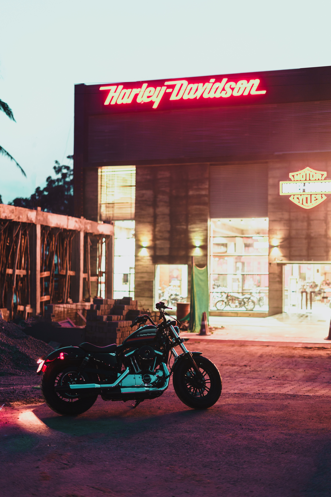

Modelos de motos
Moto custom
A categoria custom tem motos com design mais voltado ao conforto, para quem curte pegar a estrada. Elas geralmente possuem um banco mais baixo (o que melhora o conforto na hora de pilotar) com apoio para garupa – conhecido popularmente como sissy bar – e garfos dianteiros (parte da motocicleta onde se encontra a roda dianteira e conjunto de freios) longos, com manoplas elevadas. Geralmente são as motos que mais fazem parte do imaginário popular por conta de filmes, músicas e fotografias famosas que mostram essas motos em ação. Também são as mais populares na maioria dos motoclubes nacionais e internacionais, compondo o ideal de motoqueiro junto com bandanas, coletes e botas de couro. É bastante conhecida por causa da marca de motocicletas Harley-Davidson.
Moto trail
Originadas das antigas motos Scrambler, as trail são conhecidas pela boa utilização tanto dentro como fora da estrada (conhecidas também como on-off road). A Yamaha foi a empresa que investiu na criação dessa categoria, com o lançamento de uma linha de uso duplo, asfalto e terra, chamadas de Trail. São motos mais leves, com suspensão de curso longo e para-lamas altos, fazendo com que os modelos sejam adaptados para enfrentar qualquer desafio. Já as motos da categoria Fun são utilizadas também no asfalto ou na terra. No entanto, as fun bikes costumam possuir motores de média a alta cilindrada. Exemplos dessas motocicletas são as Honda Falcon e Yamaha TDM.
Moto sport

As motos de categoria esportiva são feitas a partir de design aerodinâmico e mecânica de alto desempenho. Geralmente são as motocicletas que mais participam em campeonatos de alta velocidade, com motores que podem ultrapassar facilmente as 1200 cilindradas. São motos pouco recomendadas para uso na cidade, tanto por seu tamanho como pela posição de pilotagem geralmente desconfortável e, em alguns casos, monolugares. Dentro desta categoria encontra-se também a Big Biker, tendo como principal característica o motor de grande deslocamento e cilindradas de até 1400cc. São maiores e mais pesadas que as motos sport.